Sono Cristian Bresadola, naturopata e riflessologo, e insegno queste discipline nella scuola di cui sono titolare a Trento: Punto Riflesso, attiva dal 2022. Quattordici percorsi accreditati, dal primo weekend al master. La teoria si studia da casa; le mani si formano solo in aula.
Se sei arrivato qui senza sapere da dove si comincia, è normale — ed è la domanda giusta. Rispondi a tre domande e ti dico io da dove partirei al posto tuo.
Questo è il mestiere.
Il resto è conseguenza.
Tre domande, trenta secondi. Non è un test e non raccoglie niente: serve solo a togliere di mezzo i dodici percorsi che non fanno per te.
Non serve un titolo per iscriversi ai corsi base: la maggior parte di chi comincia non ha mai lavorato nel settore.
Rispondi di pancia: è la parte che ti farà studiare anche quando sarai stanco.
Onestamente. I corsi si frequentano lavorando, ma un percorso da 186 ore resta un impegno lungo.
Preferisci parlarne? Scrivimi su WhatsApp: scegliere il percorso è una conversazione, non un click.
Date aggiornate al 4 settembre 2026. I posti rimasti si vedono solo sulla scheda del corso, dove il numero è vivo.
Ognuno ha la sua durata e la sua materia. Tutti condividono la stessa convinzione: la pratica si trasmette in presenza, una mano alla volta. La teoria si studia da casa, con tutoraggio diretto.
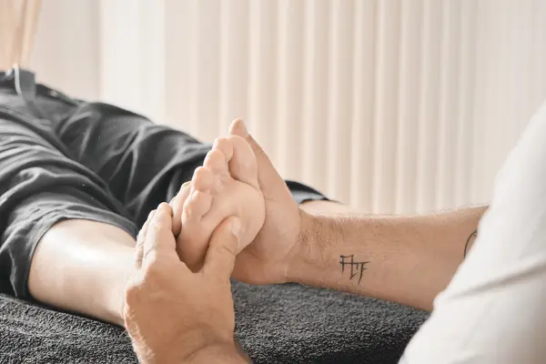
Fondamenti · il più strutturato Riflessologia Plantare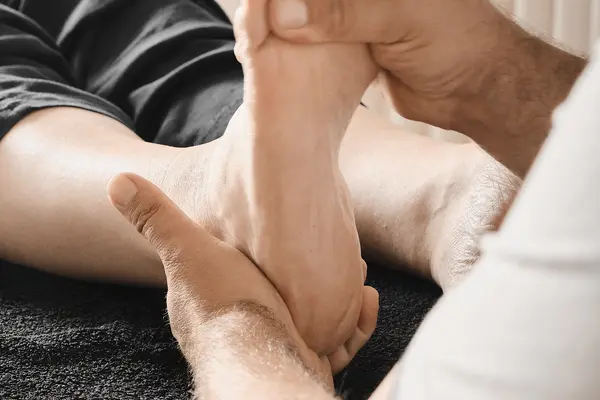
Fondamenti · modulare Operatore Olistico del Benessere Integrato Il percorso che integra mani, cuore e sapere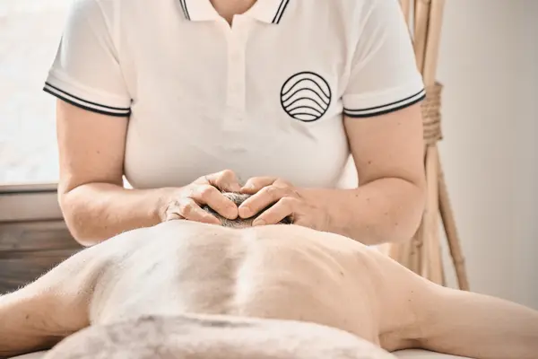
Fondamenti · percorso d'anima Massaggio Metamorfico dell'Incarnazione Una mano leggera sul tempo che ci ha formati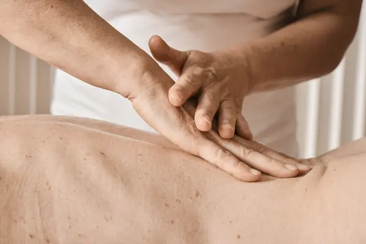
Fondamenti · tocco essenziale Massaggio Breuss Un allungamento dolce della colonna, che crea spazio e alleggerisce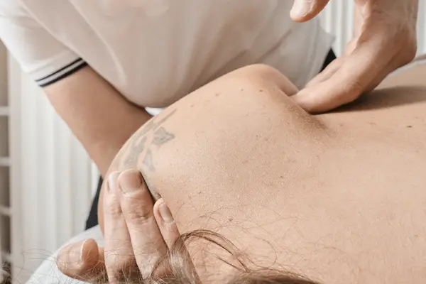
Fondamenti Massaggio Classico Base Le mani come strumento di ascolto, tecnica e cura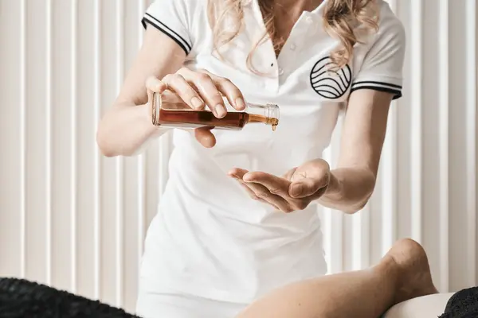
Fondamenti · secondo passo Massaggio Classico Avanzato Il Metodo Punto Riflesso: da tecnica appresa a tocco proprio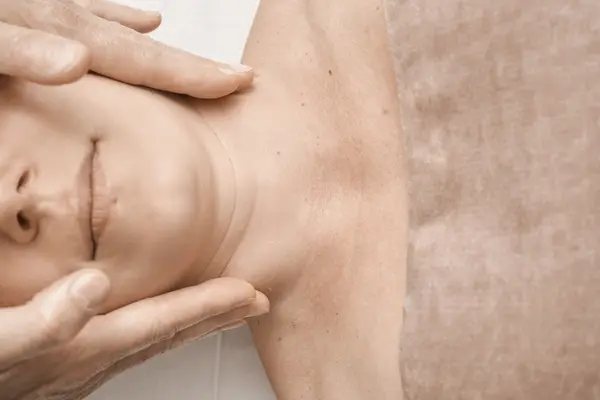
Fondamenti Massaggio Californiano Un abbraccio lungo che attraversa tutto il corpo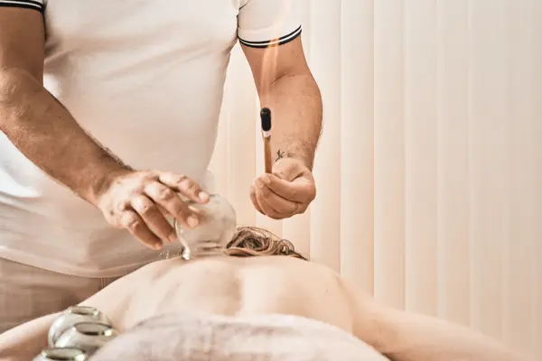
Fondamenti Massaggio Decontratturante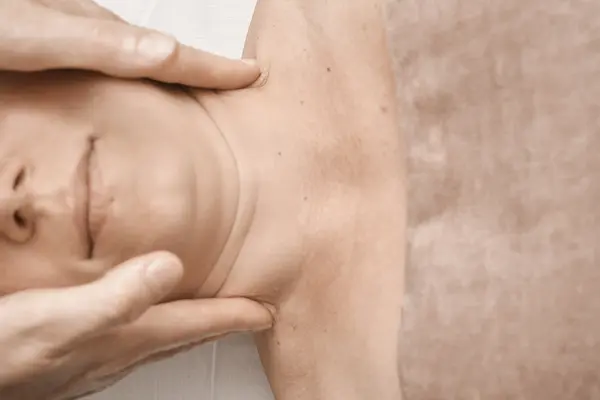
Fondamenti Massaggio Drenante Base Mani che accompagnano la linfa nel suo cammino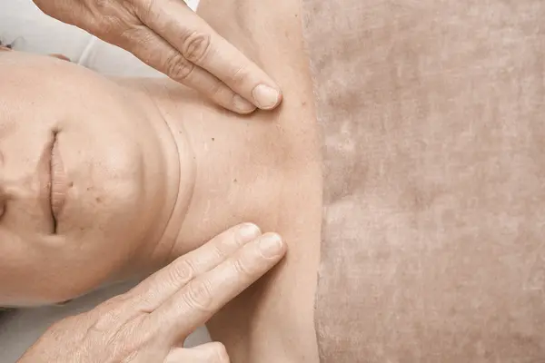
Specializzazione Massaggio Drenante Sudamericano Il drenaggio che parla la lingua dei tropici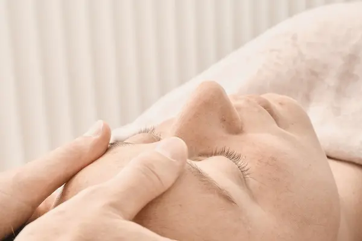
Specializzazione Massaggio Giapponese Viso Il lifting naturale di tradizione giapponese Specializzazione Massaggio Sportivo Il tocco che prepara, sostiene, ripara il corpo atletico Specializzazione Floriterapia e i 38 Fiori di Bach Trentotto fiori per le emozioni che chiedono ascolto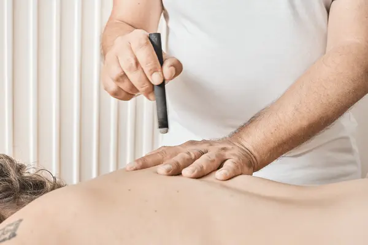
Il master · il completamento Master in Medicina Cinese e Riflessologia Completare il cerchio: dal piede al sistema vivo della MTCOre e quote aggiornate al 4 settembre 2026. Le condizioni valide sono sempre quelle sulla scheda del corso.
La scuola è nata a Trento e da qui continua a insegnare. Dal 2026 il percorso più lungo che facciamo si tiene anche alle porte di Roma.
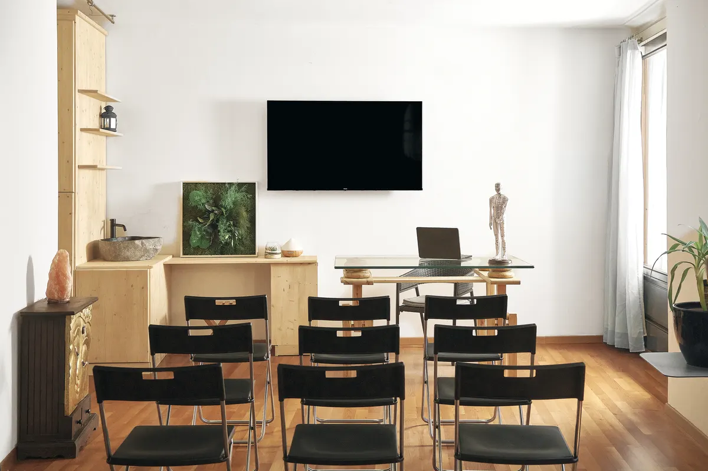
Vicolo della Contrada Tedesca 9, in centro storico — lo stesso indirizzo in cui ricevo il martedì. IV edizione della riflessologia plantare: sei weekend fra sabato e domenica, da novembre 2026 ad aprile 2027.
Date e sede →Presso il Centro Olistico Erba Sacra, Via Passo Buole 117. Quattro weekend lunghi dal venerdì alla domenica, da settembre a dicembre 2026, con tutoraggio online fra un incontro e l'altro. Stesso metodo e stesso attestato, senza dover salire al Nord.
Date e sede →La pratica è solo in presenza, perché un tocco non si trasmette da uno schermo: serve qualcuno che ti guardi le mani e te le corregga. La teoria invece si studia da casa, con i tuoi tempi, e chi lavora riesce a seguire.
Gratuitamente. Se un weekend non l'hai assorbito, o se dopo sei mesi vuoi rivederlo con altre mani in aula, torni. È la differenza fra aver comprato un corso e aver imparato un mestiere.
Tutoraggio prima, durante e dopo. Poi la community degli operatori, l'app con le videolezioni e i materiali, e l'assistenza per chi vuole davvero avviarsi alla professione.
Un approccio integrato che unisce riflessologia plantare, massaggio Breuss, Medicina Tradizionale Cinese e discipline olistiche in un lavoro coerente sulla persona. Lo insegno progressivamente lungo tutti i corsi. Se prima di iscriverti vuoi vedere come si traduce in pratica, guarda la pagina della riflessologia plantare a Trento: c'è una seduta raccontata passo per passo.
Non serve esperienza per cominciare, e non serve decidere tutto subito. Scrivimi dove sei e dove vorresti arrivare: ti dico io da dove partirei, anche se la risposta è «aspetta».
Punto Riflesso è la scuola di cui sono titolare e formatore: iscrizioni, quote e attestati si gestiscono su puntoriflesso.com.